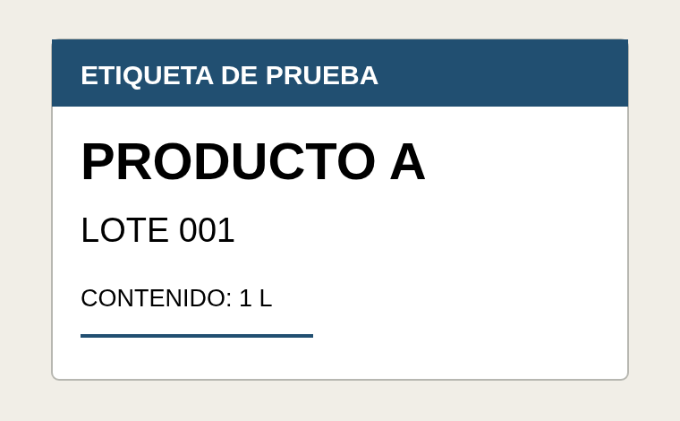

VISIÓN / LECTURA OCR REAL
De una imagen a texto.
Modelo Florence-2 del proyecto, ejecutado sobre una etiqueta ficticia. Vista preparada para el portafolio.
ENTRADA · ETIQUETA FICTICIA

SALIDA REAL · TAREA OCR
ETIQUETA DE PRUEBAPRODUCTO ALOTE 001CONTENIDO: 1 L
Imagen → Florence-2 → Texto reconocido
Prueba de lectura sobre una imagen estática. No mide precisión, velocidad de línea ni clasificación de productos.
← Volver al sistema de visión